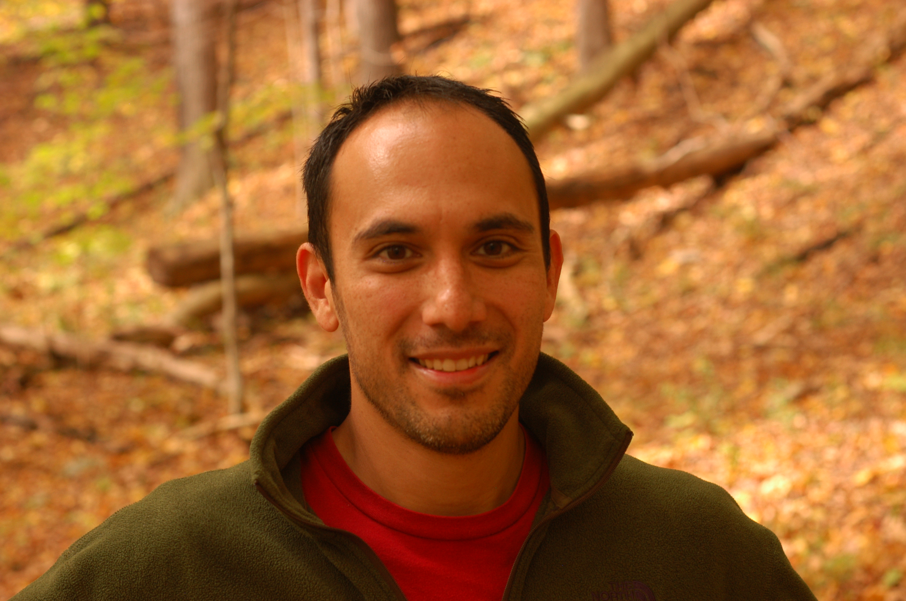

|  |
I am a third-year Ph.D. Student in the Autonomous Systems Laboratory in the Sibley School of Mechanical and Aerospace Engineering at Cornell University. My advisor is Prof. Hadas Kress-Gazit. I am interested in the synthesis of provably-correct controllers for complex robotic systems. My work leverages from a broad spectrum of ideas, including optimization, formal methods, and control systems.
Previous to my current position, I worked at NASA and Impact Tech (now Sikorsky).
JAD and Hadas Kress-Gazit, “Synthesis of Nonlinear Continuous Controllers for Verifiably-Correct High-Level, Reactive Behaviors,” (in preparation).
JAD and Hadas Kress-Gazit, “Guaranteeing Reactive High-Level Behaviors for Robots with Complex Dynamics,” International Conference on Intelligent Robots and Systems (IROS), 2013.
Instructor, Rochester Institute of Technology
Systems Modeling, Winter 2010 – 2011
Ph.D., Aerospace Engineering, Cornell University, 2016 (expected)
Minor in Computer Science
B.S./M.S., Mechanical Engineering, Virginia Tech, 2003
127 Upson Hall
Cornell University
Ithaca, NY 14850
jad455 - at - cornell.edu